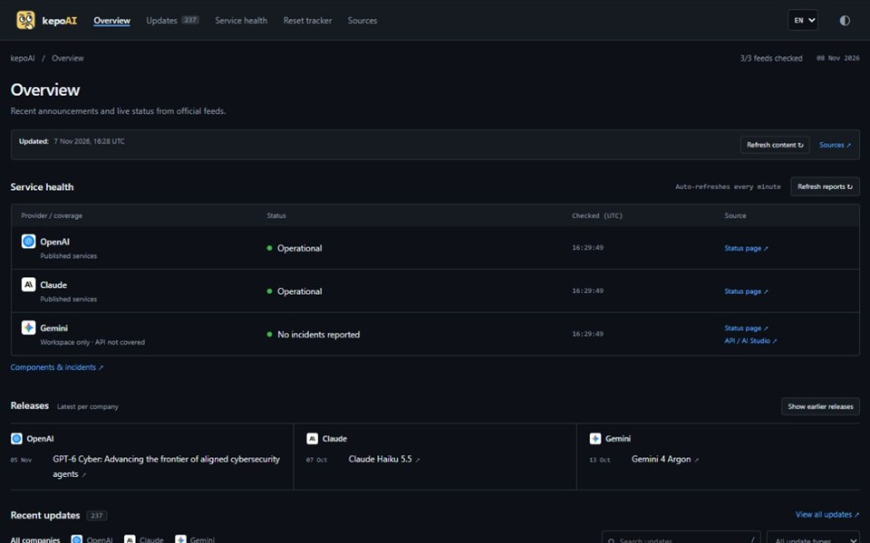

Information dashboard · Personal project
kepoAI
One dashboard for OpenAI, Claude, and Gemini updates, service health, and archived Codex reset announcements.

The problem
AI announcements and service reports are spread across separate feeds. Checking several sources makes it harder to follow updates and understand whether a service is having problems.
What it does
- Browse updates by provider, category, or search term.
- Check service reports with links back to their official sources.
- Review archived reset announcements alongside current updates.
Separate collection from display
Python scripts collect public content through a scheduled GitHub Actions workflow. The generated dashboard is served as a static site, while the browser refreshes public content and service feeds. Failed requests preserve the last available records.
Scope & limitations
No account or API key is required. Gemini status coverage is limited to Workspace. Reset records come from a third-party archive and do not predict future resets.